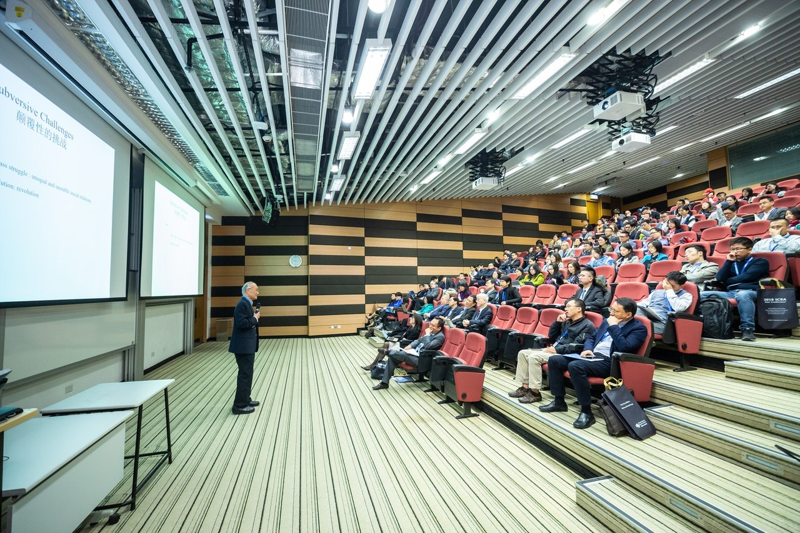

São Paulo, 6 de dezembro de 2020: A CCXP ganhou o mundo. Considerado o maior festival de cultura
pop do planeta desde 2018, o evento, que no ano passado recebeu mais de 280 mil pessoas na cidade
de São Paulo, neste ano totalmente atípico e digital de 2020 atravessou oceanos e chegou em 113
países. Com o propósito de espalhar esperança e contar as principais novidades do mercado de
entretenimento pelo mundo, a CCXP Worlds: A Journey of Hope atraiu atenção de 1,5 milhão de
pessoas que navegaram pelos 12 mundos virtuais do festival. Foram mais de 150 horas de conteúdos
programados em cinco palcos – Thunder Arena, Artists’ Valley, Creatos & Cosplay Universe, Oi Game
Arena e Omelete Stage by Santander – e o público ainda foi brindado com até 250 lives diárias de
quadrinistas que participavam das mesas virtuais e não abriram mão de interagir com os fãs. Em uma
edição histórica marcada pela diversidade e o uso de tecnologia, a CCXP termina neste domingo, 6,
mas quem adquiriu os pacotes Digital, Home e Epic Experience de ingressos ainda pode rever todo o
conteúdo até o dia 13 de dezembro. Entre as novidades deste último dia, a organização já confirma
próxima edição e anuncia as datas: de 2 a 5 de dezembro de 2021.
“Foi preciso muita coragem para, em um ano como 2020, colocar de pé um festival virtual do tamanho
da CCXP Worlds. Com a nossa plataforma, mais uma vez mostramos que para nós a experiência do fã
está sempre em primeiro lugar. Levamos nossa marca, o Brasil e todos os parceiros para o mundo. Foi
um formato que deu muito certo e, muito provavelmente, estará nos nossos planos combinar o virtual
com o presencial nas próximas edições”, adianta Pierre Mantovani, CEO da CCXP. Já para CMO de do
festival, Roberto Fabri, a tecnologia desenvolvida para a CCXP Worlds foi um dos pontos altos desta
edição. “Nosso principal objetivo era proporcionar ao fã uma experiência nova e divertida, que o
mantivesse como protagonista do festival. Foram três meses de trabalho intenso, com grandes
profissionais que deram seu melhor para criar os mundos mágicos da CCXP, onde não existe limite
para o extraordinário. Não é exagero dizer que revolucionamos os eventos virtuais e a resposta do
público não poderia ter sido melhor”, comemora.
Ao longo dos três dias de CCXP Worlds, a diversidade foi a grande marca do festival. Tanto em frente
às câmeras, com apresentadores e convidados, quanto nas mesas do Artists’ Valley e nos temas dos
painéis. Se o feminismo foi uma das grandes pautas desta edição, como público as mulheres também
compareceram em peso e corresponderam a 45% dos cadastrados na plataforma, contra 55% dos
homens, somando 1,5 milhão de pessoas navegando pela plataforma e com picos de 350 mil usuários
simultâneos.